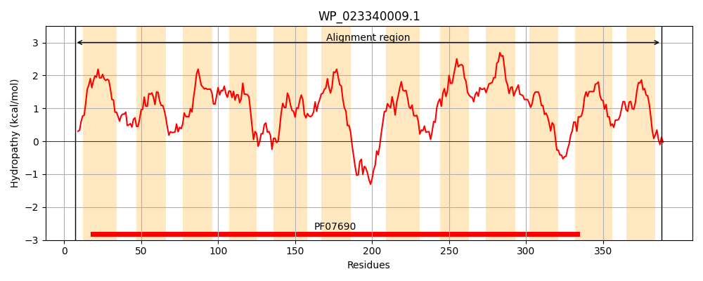
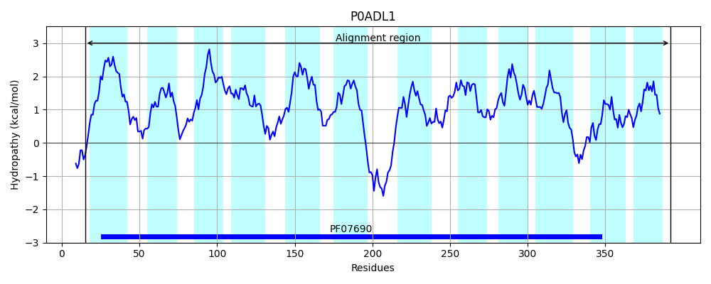
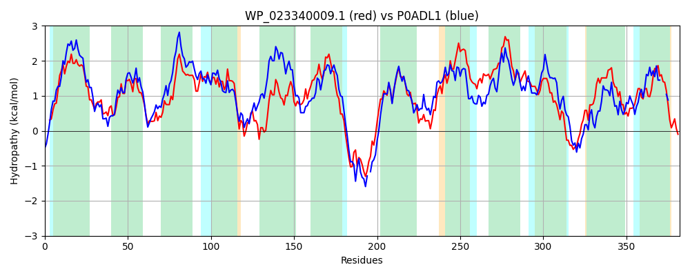

Hit Accession: P0ADL1
Hit TCID: 2.A.1.2.26
Hit Description: gnl|BL_ORD_ID|8755 gnl|TC-DB|P0ADL1|2.A.1.2.26 Purine ribonucleoside efflux pump nepI - Escherichia coli.
Mach Len: 382
e:0.000000
Query TMS Count : 12
Hit TMS Count: 12
TMS-Overlap Score: 12.000000
Predicted Substrates:CHEBI:8639;7H-purine, CHEBI:26399;purine ribonucleoside
BLAST Alignment:
Score: 749 , Bit scores: 293 bits, E-value: 2.4e-96, Alignment length: 382, Percentage identity: 40
Query: 7 TRAYWSGVLAMTLCVFVLIASEFMPVSLLTPIAGDLHITEGLAGQGIALSGALAVLTSLTISRLTGSLDRKWLLLGLTALMAASGLMIALASSFPVYMLGRALIGIVIGGFWSMSAATAIRLVPQRQVPRALAIFNGGNALATVVAAPLGSYLGATVGWRGAFLCLVPLAMVAFIWQCVSLPSMKSQRAPQRQGTVLRLFRRSTVSLGLLACGLFFMGQFTLFTYVRPFLETVTRVSSSGLPLILLAIGVAGFVGTLLISTVLHARFYLTLVAIPLIMAAIVGALLLAGHHTGAVTVLLSLWGLLATAAPTGWWTWIARTLPEDAEAGGGLMVAVIQLSIALGSTAGGLVFDSLGWHSTFALSGLLLLGAAGGTFLLSIKIR 388
TR WS V ++ CV LI EF+PVSLLTP+A DL I+EG+AGQ + ++ +A+ SL I++ + DR+++++ L+ S L+++ A+SF + ++GRA +G+ +GGFW+MSA+ +RLVP R VP+AL++ G ++A V+AAPLGS+LG +GWR F + ++ W SLPS+ + + Q+Q T RL +R V G++A + F GQF FTY+RP + GL L+LL+ G+A F+GT L S +L L L PLI+A L L G T + +WGL P GW TWI R+L + AE G + VAVIQL+ G+ GG D++G S LSG L+L A L++ K++
Sbjct: 15 TRPNWSAVFSVAFCVACLIIVEFLPVSLLTPMAQDLGISEGVAGQSVTVTAFVAMFASLFITQTIQATDRRYVVILFAVLLTLSCLLVSFANSFSLLLIGRACLGLALGGFWAMSASLTMRLVPPRTVPKALSVIFGAVSIALVIAAPLGSFLGELIGWRNVFNAAAVMGVLCIFWIIKSLPSLPGEPSHQKQNT-FRLLQRPGVMAGMIAIFMSFAGQFAFFTYIRPVYMNLAGFGVDGLTLVLLSFGIASFIGTSLSSFILKRSVKLALAGAPLILAVSALVLTLWGSDKIVATGVAIIWGLTFALVPVGWSTWITRSLADQAEKAGSIQVAVIQLANTCGAAIGGYALDNIGLTSPLMLSGTLMLLTA---LLVTAKVK 392 | Protein Hydropathy Plots: |
|---|
|  |  |
Pairwise Alignment-Hydropathy Plot:
|
|---|
|  |